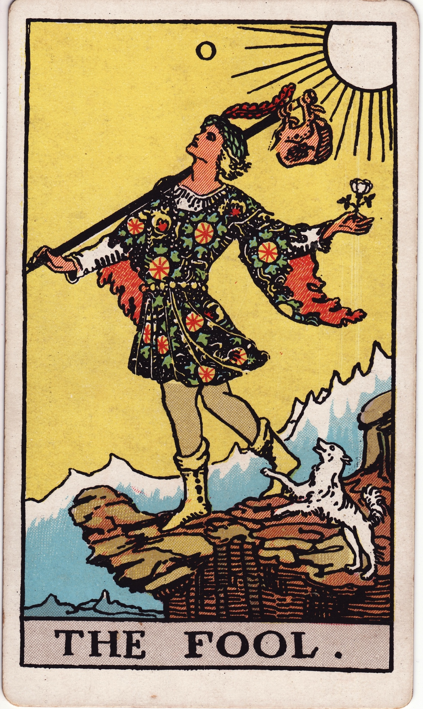

About me
Background & interests
Hello! I’m a sophomore at Cornell University studying computer science with a minor in business.
I’m especially interested in computer vision, design, and artificial intelligence. Lately, I’ve been toying around with AI agents and exploring how they can be used to build cool stuff.
Outside of that, I’m always excited to learn from other people and see what they’re building. Be curious, be kind to each other, and make cool things :)
My skills:
- Languages
- Frameworks & libraries
- Databases
Outside of class
I love reading webnovels and light novels. My all-time favorites are Lord of the Mysteries and Reverend Insanity (can’t pick). I also read way too much manhwa ˆ𐃷ˆ
Outside of reading, I love experimenting with design and building random things that I think would look cool. I’m especially obsessed with wuxia/xianxia aesthetics and anything that feels immersive or a little unreal.
I’m also pretty into finance. I like following stocks and companies, seeing what makes them grow, and trying to understand why the market reacts the way it does.
A little detail: the proverbs drifting along the sides are from Reverend Insanity

Currently rereading
Lord of the MysteriesChapter 218